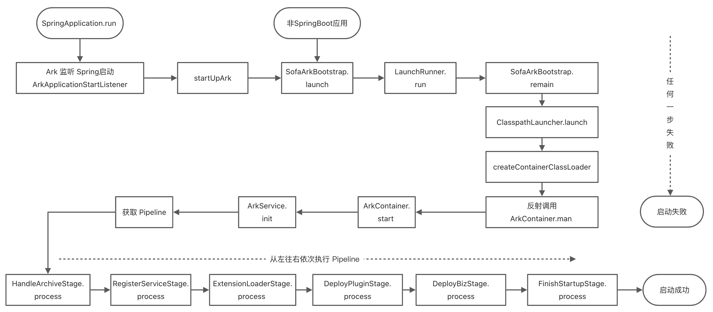
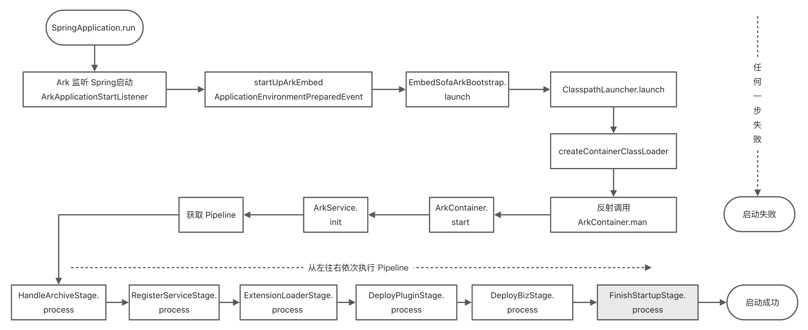
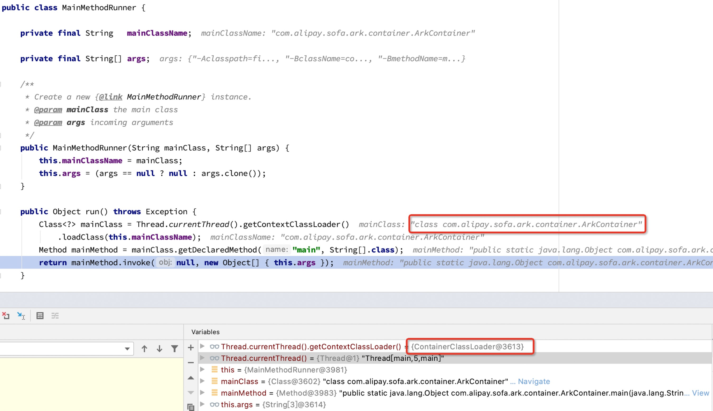

启动过程
Ark 1.0 非内嵌模式
打包方式
在 SOFAArk 1.0 中使用 sofa-ark-maven-plugin 打包
<build>
<plugins>
<plugin>
<groupId>com.alipay.sofa</groupId>
<artifactId>sofa-ark-maven-plugin</artifactId>
<version>${sofa.ark.version}</version>
<executions>
<execution>
<id>default-cli</id>
<!--goal executed to generate executable-ark-jar -->
<goals>
<goal>repackage</goal>
</goals>
<configuration>
<outputDirectory>./target</outputDirectory>
<!--default none-->
<arkClassifier>executable-ark</arkClassifier>
</configuration>
</execution>
</executions>
</plugin>
</plugins>
</build>
启动流程图
Ark 1.0 应用的整体启动流程如下图所述： 
启动方式
方式一、IDEA 启动
使用 idea 启动 SpringBoot Application 即可
方式二、命令行启动
Ark 包是可执行 Jar，可直接使用 java -jar 的方式启动，先使用 mvn clean package 进行打包，打包得到 ${bizName}-${bizVersion}-executable-ark.jar，命令行启动
java -jar ${bizName}-${bizVersion}-executable-ark.jar
启动原理分析
Springboot 应用，ArkApplicationStartListener 实现了 ApplicationListener 接口，监听 Spring 的启动事件，调用SofaArkBootstrap.launch(args)启动 Ark。
public class ArkApplicationStartListener implements ApplicationListener<SpringApplicationEvent> {
@Override
public void onApplicationEvent(SpringApplicationEvent event) {
try {
if (isSpringBoot2()
&& APPLICATION_STARTING_EVENT.equals(event.getClass().getCanonicalName())) {
startUpArk(event);
}
if (isSpringBoot1()
&& APPLICATION_STARTED_EVENT.equals(event.getClass().getCanonicalName())) {
startUpArk(event);
}
} catch (Throwable e) {
throw new RuntimeException("Meet exception when determine whether to start SOFAArk!", e);
}
}
public void startUpArk(SpringApplicationEvent event) {
if (LAUNCH_CLASSLOADER_NAME.equals(this.getClass().getClassLoader().getClass().getName())) {
// Ark 启动入口，非 Springboot 应用需要手动调用该方法
SofaArkBootstrap.launch(event.getArgs());
}
}
public boolean isSpringBoot1() {
return SpringBootVersion.getVersion().startsWith("1");
}
public boolean isSpringBoot2() {
return SpringBootVersion.getVersion().startsWith("2");
}
}
SofaArkBootstrap launch 方法里面启了一个线程执行SofaArkBootstrap.remain方法，remain 里面调ClasspathLauncher.launch方法。
public class SofaArkBootstrap {
private static final String BIZ_CLASSLOADER = "com.alipay.sofa.ark.container.service.classloader.BizClassLoader";
private static final String MAIN_ENTRY_NAME = "remain";
private static EntryMethod entryMethod;
public static void launch(String[] args) {
try {
if (!isSofaArkStarted()) {
entryMethod = new EntryMethod(Thread.currentThread());
IsolatedThreadGroup threadGroup = new IsolatedThreadGroup(
entryMethod.getDeclaringClassName());
// 参数中指定当前类的remain方法，LaunchRunner.run 里面会用反射调用remain方法
LaunchRunner launchRunner = new LaunchRunner(SofaArkBootstrap.class.getName(),
MAIN_ENTRY_NAME, args);
Thread launchThread = new Thread(threadGroup, launchRunner,
entryMethod.getMethodName());
launchThread.start();
// 等待前面的线程执行完成
LaunchRunner.join(threadGroup);
threadGroup.rethrowUncaughtException();
System.exit(0);
}
} catch (Throwable e) {
throw new RuntimeException(e);
}
}
private static void remain(String[] args) throws Exception {// NOPMD
// 在一个新的线程里面执行该方法
AssertUtils.assertNotNull(entryMethod, "No Entry Method Found.");
URL[] urls = getURLClassPath();
new ClasspathLauncher(new ClassPathArchive(entryMethod.getDeclaringClassName(),
entryMethod.getMethodName(), urls)).launch(args, getClasspath(urls),
entryMethod.getMethod());
}
}
ClasspathLauncher launch 方法在基类 AbstractLauncher 里面，会先创建 ContainerClassLoader，然后修改当前线程的 classLoader，通过 ContainerClassLoader 加载 com.alipay.sofa.ark.container.ArkContainer，然后使用反射执行 com.alipay.sofa.ark.container.ArkContainer.main 方法。
public abstract class AbstractLauncher {
/**
* Launch the ark container. This method is the initial entry point when execute an fat jar.
* @throws Exception if the ark container fails to launch.
*/
public Object launch(String[] args) throws Exception {
JarFile.registerUrlProtocolHandler();
// 创建 ContainerClassLoader
ClassLoader classLoader = createContainerClassLoader(getContainerArchive());
List<String> attachArgs = new ArrayList<>();
attachArgs
.add(String.format("%s%s=%s", CommandArgument.ARK_CONTAINER_ARGUMENTS_MARK,
CommandArgument.FAT_JAR_ARGUMENT_KEY, getExecutableArchive().getUrl()
.toExternalForm()));
attachArgs.addAll(Arrays.asList(args));
return launch(attachArgs.toArray(new String[attachArgs.size()]), getMainClass(),
classLoader);
}
protected Object launch(String[] args, String mainClass, ClassLoader classLoader)
throws Exception {
ClassLoader old = Thread.currentThread().getContextClassLoader();
try {
// 修改线程的classLoader
Thread.currentThread().setContextClassLoader(classLoader);
// 通过反射执行 com.alipay.sofa.ark.container.ArkContainer.main
return createMainMethodRunner(mainClass, args).run();
} finally {
Thread.currentThread().setContextClassLoader(old);
}
}
// ......
}
ArkContainer main 方法里面，会创建一个 ArkContainer 实例，然后执行 start 方法，start 方法中会获取 Pipeline，然后执行 StandardPipeline。
public class ArkContainer {
// ......
public Object start() throws ArkRuntimeException {
AssertUtils.assertNotNull(arkServiceContainer, "arkServiceContainer is null !");
if (started.compareAndSet(false, true)) {
Runtime.getRuntime().addShutdownHook(new Thread(new Runnable() {
@Override
public void run() {
stop();
}
}));
prepareArkConfig();
reInitializeArkLogger();
arkServiceContainer.start();
// 获取 Pipeline
Pipeline pipeline = arkServiceContainer.getService(Pipeline.class);
// 执行 Pipeline
pipeline.process(pipelineContext);
// Pipeline 执行完成之后 Ark 启动成功
System.out.println("Ark container started in " + (System.currentTimeMillis() - start) //NOPMD
+ " ms.");
}
return this;
}
// ......
}
StandardPipeline 里面内置了 6 个 Stage，会按顺序执行。
public class StandardPipeline implements Pipeline {
private static final ArkLogger LOGGER = ArkLoggerFactory.getDefaultLogger();
private List<PipelineStage> stages = new ArrayList<>();
public StandardPipeline() {
initializePipeline();
}
private void initializePipeline() {
// 初始化 Stage
addPipelineStage(
ArkServiceContainerHolder.getContainer().getService(HandleArchiveStage.class))
.addPipelineStage(
ArkServiceContainerHolder.getContainer().getService(RegisterServiceStage.class))
.addPipelineStage(
ArkServiceContainerHolder.getContainer().getService(ExtensionLoaderStage.class))
.addPipelineStage(
ArkServiceContainerHolder.getContainer().getService(DeployPluginStage.class))
.addPipelineStage(
ArkServiceContainerHolder.getContainer().getService(DeployBizStage.class))
.addPipelineStage(
ArkServiceContainerHolder.getContainer().getService(FinishStartupStage.class));
}
@Override
public Pipeline addPipelineStage(PipelineStage pipelineStage) {
stages.add(pipelineStage);
return this;
}
@Override
public void process(PipelineContext pipelineContext) throws ArkRuntimeException {
for (PipelineStage pipelineStage : stages) {
try {
LOGGER.info(String.format("Start to process pipeline stage: %s", pipelineStage
.getClass().getName()));
// 按顺序执行 Stage，有一个 Stage 执行报错都会终止 ark 启动
pipelineStage.process(pipelineContext);
LOGGER.info(String.format("Finish to process pipeline stage: %s", pipelineStage
.getClass().getName()));
} catch (Throwable e) {
LOGGER.error(String.format("Process pipeline stage fail: %s", pipelineStage
.getClass().getName()), e);
throw new ArkRuntimeException(e);
}
}
}
}
Ark 2.0 内嵌模式
打包方式
在 SOFAArk 2.0 中基座是采用 spring-boot 原生打包插件 spring-boot-maven-plugin 打包
<build>
<plugins>
<plugin>
<groupId>org.springframework.boot</groupId>
<artifactId>spring-boot-maven-plugin</artifactId>
<version>2.6.6</version>
<configuration>
<outputDirectory>target</outputDirectory>
<classifier>ark-biz</classifier>
</configuration>
<executions>
<execution>
<id>package</id>
<goals>
<goal>repackage</goal>
</goals>
</execution>
</executions>
</plugin>
</plugins>
</build>
启动流程图

启动方式
方式一、IDEA 启动
本地启动需要加上启动参数
-Dsofa.ark.embed.enable=true -Dcom.alipay.sofa.ark.master.biz=${bizName}
方式二、命令行启动
Ark包是可执行Jar，可直接使用Java -jar的方式启动，先使用 mvn clean package 进行打包，打包得到 ${bizName}-${bizVersion}-ark-biz.jar，命令行启动
java -jar -Dsofa.ark.embed.enable=true -Dcom.alipay.sofa.ark.master.biz=${bizName} ${bizName}-${bizVersion}-ark-biz.jar
启动原理分析
启动入口
入口和 1.0 一样，使用 ArkApplicationStartListener 监听 Spring 的启动事件，调用EmbedSofaArkBootstrap.launch启动 Ark。
public class ArkApplicationStartListener implements ApplicationListener<SpringApplicationEvent> {
@Override
public void onApplicationEvent(SpringApplicationEvent event) {
try {
if (ArkConfigs.isEmbedEnable()
|| LaunchedURLClassLoader.class.isAssignableFrom(this.getClass().getClassLoader()
.getClass())) {
ArkConfigs.setEmbedEnable(true);
// Ark 2.0 内嵌模式
startUpArkEmbed(event);
return;
}
if (isSpringBoot2()
&& APPLICATION_STARTING_EVENT.equals(event.getClass().getCanonicalName())) {
startUpArk(event);
}
if (isSpringBoot1()
&& APPLICATION_STARTED_EVENT.equals(event.getClass().getCanonicalName())) {
startUpArk(event);
}
} catch (Throwable e) {
throw new RuntimeException("Meet exception when determine whether to start SOFAArk!", e);
}
}
// ......
protected void startUpArkEmbed(SpringApplicationEvent event) {
if (this.getClass().getClassLoader() != Thread.currentThread().getContextClassLoader()) {
return;
}
if (event instanceof ApplicationEnvironmentPreparedEvent) {
ApplicationEnvironmentPreparedEvent preparedEvent = (ApplicationEnvironmentPreparedEvent) event;
// Ark 启动入口
EmbedSofaArkBootstrap.launch(preparedEvent.getEnvironment());
}
if (event instanceof ApplicationReadyEvent) {
if (ArkClient.getEventAdminService() != null && ArkClient.getMasterBiz() != null) {
ArkClient.getEventAdminService().sendEvent(
new AfterBizStartupEvent(ArkClient.getMasterBiz()));
ArkClient.getEventAdminService().sendEvent(new AfterFinishDeployEvent());
ArkClient.getEventAdminService().sendEvent(new AfterFinishStartupEvent());
}
}
}
}
EmbedSofaArkBootstrap launch 方法里面直接调ClasspathLauncher.launch，此处和 1.0 的处理有些差异。
public class EmbedSofaArkBootstrap {
private static AtomicBoolean started = new AtomicBoolean(false);
public static void launch(Environment environment) {
if (started.compareAndSet(false, true)) {
EntryMethod entryMethod = new EntryMethod(Thread.currentThread());
getOrSetDefault(
Constants.MASTER_BIZ,
environment.getProperty(Constants.MASTER_BIZ,
environment.getProperty("spring.application.name")));
getOrSetDefault(Constants.BIZ_CLASS_LOADER_HOOK_DIR,
environment.getProperty(Constants.BIZ_CLASS_LOADER_HOOK_DIR));
getOrSetDefault(Constants.PLUGIN_EXPORT_CLASS_ENABLE,
environment.getProperty(Constants.PLUGIN_EXPORT_CLASS_ENABLE, "false"));
getOrSetDefault(Constants.BIZ_CLASS_LOADER_HOOK_DIR,
DelegateToMasterBizClassLoaderHook.class.getName());
try {
URL[] urls = getURLClassPath();
ClasspathLauncher launcher = new ClasspathLauncher(new EmbedClassPathArchive(
entryMethod.getDeclaringClassName(), entryMethod.getMethod().getName(), urls));
// 调 ClasspathLauncher.launch
launcher.launch(new String[] {}, getClasspath(urls), entryMethod.getMethod());
} catch (Throwable e) {
throw new RuntimeException(e);
}
}
}
// ......
}
ClasspathLauncher launch 方法内容和 Ark 1.0 类似，会先创建 ContainerClassLoader，然后修改当前线程的 classLoader，通过 ContainerClassLoader 加载 com.alipay.sofa.ark.container.ArkContainer，然后使用反射执行 com.alipay.sofa.ark.container.ArkContainer.main 方法。

ArkContainer main 方法里面，会创建一个 ArkContainer 实例，然后执行 start 方法，开始启动容器服务。
public class ArkContainer {
// .....
public static Object main(String[] args) throws ArkRuntimeException {
if (args.length < MINIMUM_ARGS_SIZE) {
throw new ArkRuntimeException("Please provide suitable arguments to continue !");
}
try {
LaunchCommand launchCommand = LaunchCommand.parse(args);
if (launchCommand.isExecutedByCommandLine()) {
ExecutableArkBizJar executableArchive;
File rootFile = new File(URLDecoder.decode(launchCommand.getExecutableArkBizJar()
.getFile()));
if (rootFile.isDirectory()) {
executableArchive = new ExecutableArkBizJar(new ExplodedArchive(rootFile));
} else {
executableArchive = new ExecutableArkBizJar(new JarFileArchive(rootFile,
launchCommand.getExecutableArkBizJar()));
}
return new ArkContainer(executableArchive, launchCommand).start();
} else {
ClassPathArchive classPathArchive;
if (ArkConfigs.isEmbedEnable()) {
// Ark 2.0 内嵌模式
classPathArchive = new EmbedClassPathArchive(launchCommand.getEntryClassName(),
launchCommand.getEntryMethodName(), launchCommand.getClasspath());
} else {
classPathArchive = new ClassPathArchive(launchCommand.getEntryClassName(),
launchCommand.getEntryMethodName(), launchCommand.getClasspath());
}
return new ArkContainer(classPathArchive, launchCommand).start();
}
} catch (IOException e) {
throw new ArkRuntimeException(String.format("SOFAArk startup failed, commandline=%s",
LaunchCommand.toString(args)), e);
}
}
// ......
public Object start() throws ArkRuntimeException {
AssertUtils.assertNotNull(arkServiceContainer, "arkServiceContainer is null !");
if (started.compareAndSet(false, true)) {
Runtime.getRuntime().addShutdownHook(new Thread(new Runnable() {
@Override
public void run() {
stop();
}
}));
prepareArkConfig();
reInitializeArkLogger();
// 启动容器服务
arkServiceContainer.start();
// 从容器服务中获取 Pipeline 实例，底层是从 Guice 中获取实例
Pipeline pipeline = arkServiceContainer.getService(Pipeline.class);
// 执行流水线
pipeline.process(pipelineContext);
// Ark 启动完成
System.out.println("Ark container started in " + (System.currentTimeMillis() - start) //NOPMD
+ " ms.");
}
return this;
}
}
启动容器服务
ArkServiceContainer 是基于 Guice 实现的容器服务，Guice 是 Google开发的, 一个轻量级的依赖注入框架。类似Spring 的依赖注入。通过 Guice 管理 Ark 容器服务相关的 bean。
public class ArkServiceContainer {
private Injector injector;
private List<ArkService> arkServiceList = new ArrayList<>();
private AtomicBoolean started = new AtomicBoolean(false);
private AtomicBoolean stopped = new AtomicBoolean(false);
private final String[] arguments;
private static final ArkLogger LOGGER = ArkLoggerFactory.getDefaultLogger();
public ArkServiceContainer(String[] arguments) {
this.arguments = arguments;
}
/**
* Start Ark Service Container
* @throws ArkRuntimeException
* @since 0.1.0
*/
public void start() throws ArkRuntimeException {
if (started.compareAndSet(false, true)) {
ClassLoader oldClassLoader = ClassLoaderUtils.pushContextClassLoader(getClass()
.getClassLoader());
try {
LOGGER.info("Begin to start ArkServiceContainer");
// Guice 是 Google开发的, 一个轻量级的依赖注入框架
injector = Guice.createInjector(findServiceModules());
// 从 guice 中查询所有 ArkService 实例
for (Binding<ArkService> binding : injector
.findBindingsByType(new TypeLiteral<ArkService>() {
})) {
arkServiceList.add(binding.getProvider().get());
}
Collections.sort(arkServiceList, new OrderComparator());
for (ArkService arkService : arkServiceList) {
LOGGER.info(String.format("Init Service: %s", arkService.getClass().getName()));
// 初始化 arkService，一共有 4 个 ArkService，分别是：
// PluginDeployService：部署 plugin 的服务
// BizDeployService: 部署 biz 包的服务
// ClassLoaderService: ClassLoader 服务
// StandardTelnetServer: Telnet 工具服务
arkService.init();
}
ArkServiceContainerHolder.setContainer(this);
ArkClient.setBizFactoryService(getService(BizFactoryService.class));
ArkClient.setBizManagerService(getService(BizManagerService.class));
ArkClient.setInjectionService(getService(InjectionService.class));
ArkClient.setEventAdminService(getService(EventAdminService.class));
ArkClient.setArguments(arguments);
LOGGER.info("Finish to start ArkServiceContainer");
} finally {
ClassLoaderUtils.popContextClassLoader(oldClassLoader);
}
}
}
private List<AbstractArkGuiceModule> findServiceModules() throws ArkRuntimeException {
try {
List<AbstractArkGuiceModule> modules = new ArrayList<>();
// 通过 java spi 加载 Module
for (AbstractArkGuiceModule module : ServiceLoader.load(AbstractArkGuiceModule.class)) {
modules.add(module);
}
return modules;
} catch (Throwable e) {
throw new ArkRuntimeException(e);
}
}
// ......
}
````
com.alipay.sofa.ark.common.guice.AbstractArkGuiceModule 文件中配置了 spi 实现 com.alipay.sofa.ark.container.guice.ContainerModule, ContainerModule 里配置了所有 ark 用到的实例，这些实例通过 @Inject 即可自动注入：
```java
public class ContainerModule extends AbstractArkGuiceModule {
@Override
protected void configure() {
// 当需要 Pipeline 的实例时，我们注入 StandardPipeline 的实例作为依赖
binder().bind(Pipeline.class).to(StandardPipeline.class);
Multibinder<ArkService> arkServiceMultibinder = Multibinder.newSetBinder(binder(),
ArkService.class);
// ArkService 有4个类型的实例
arkServiceMultibinder.addBinding().to(PluginDeployServiceImpl.class);
arkServiceMultibinder.addBinding().to(BizDeployServiceImpl.class);
arkServiceMultibinder.addBinding().to(ClassLoaderServiceImpl.class);
arkServiceMultibinder.addBinding().to(StandardTelnetServerImpl.class);
// 当需要 PluginManagerService 的实例时，我们注入 PluginManagerServiceImpl 的实例作为依赖
binder().bind(PluginManagerService.class).to(PluginManagerServiceImpl.class);
// 下面是一样的道理
binder().bind(BizManagerService.class).to(BizManagerServiceImpl.class);
binder().bind(ClassLoaderService.class).to(ClassLoaderServiceImpl.class);
binder().bind(PluginDeployService.class).to(PluginDeployServiceImpl.class);
binder().bind(BizDeployService.class).to(BizDeployServiceImpl.class);
binder().bind(RegistryService.class).to(RegistryServiceImpl.class);
binder().bind(InjectionService.class).to(InjectionServiceImpl.class);
binder().bind(TelnetServerService.class).to(StandardTelnetServerImpl.class);
binder().bind(BizFactoryService.class).to(BizFactoryServiceImpl.class);
binder().bind(PluginFactoryService.class).to(PluginFactoryServiceImpl.class);
binder().bind(ExtensionLoaderService.class).to(ExtensionLoaderServiceImpl.class);
binder().bind(EventAdminService.class).to(EventAdminServiceImpl.class);
}
}
执行流水线
容器服务 arkServiceContainer 启动完成之后，就容器服务中获取 Pipeline 实例，执行流水线，下面看一下 StandardPipeline 的源码：
// 在容器中是单例对象
@Singleton
public class StandardPipeline implements Pipeline {
private static final ArkLogger LOGGER = ArkLoggerFactory.getDefaultLogger();
private List<PipelineStage> stages = new ArrayList<>();
public StandardPipeline() {
initializePipeline();
}
private void initializePipeline() {
// 一共有 6 个步骤
addPipelineStage(
ArkServiceContainerHolder.getContainer().getService(HandleArchiveStage.class))
.addPipelineStage(
ArkServiceContainerHolder.getContainer().getService(RegisterServiceStage.class))
.addPipelineStage(
ArkServiceContainerHolder.getContainer().getService(ExtensionLoaderStage.class))
.addPipelineStage(
ArkServiceContainerHolder.getContainer().getService(DeployPluginStage.class))
.addPipelineStage(
ArkServiceContainerHolder.getContainer().getService(DeployBizStage.class))
.addPipelineStage(
ArkServiceContainerHolder.getContainer().getService(FinishStartupStage.class));
}
@Override
public Pipeline addPipelineStage(PipelineStage pipelineStage) {
stages.add(pipelineStage);
return this;
}
@Override
public void process(PipelineContext pipelineContext) throws ArkRuntimeException {
for (PipelineStage pipelineStage : stages) {
try {
LOGGER.info(String.format("Start to process pipeline stage: %s", pipelineStage
.getClass().getName()));
// 执行每个步骤
pipelineStage.process(pipelineContext);
LOGGER.info(String.format("Finish to process pipeline stage: %s", pipelineStage
.getClass().getName()));
} catch (Throwable e) {
LOGGER.error(String.format("Process pipeline stage fail: %s", pipelineStage
.getClass().getName()), e);
throw new ArkRuntimeException(e);
}
}
}
}
Archive 解析
Ark 2.0 模式下，在这个步骤里会创建 master biz，创建 master biz 的过程见 processEmbed 方法和 BizFactoryServiceImpl 里面的 createEmbedMasterBiz，并且 master biz 是使用 LaunchedURLClassLoader 加载的（本地启动是用 AppClassLoader） 。创建完 master biz 之后进行安装 plugin。
// HandleArchiveStage 类
protected void processEmbed(PipelineContext pipelineContext) throws Exception {
// 获取到 Launcher$AppClassLoader
ClassLoader masterBizClassLoader = pipelineContext.getClass().getClassLoader();
// 创建 master biz
Biz masterBiz = bizFactoryService.createEmbedMasterBiz(masterBizClassLoader);
bizManagerService.registerBiz(masterBiz);
ArkClient.setMasterBiz(masterBiz);
ArkConfigs.putStringValue(Constants.MASTER_BIZ, masterBiz.getBizName());
ExecutableArchive executableArchive = pipelineContext.getExecutableArchive();
// 获取 plugin 包
List<PluginArchive> pluginArchives = executableArchive.getPluginArchives();
for (PluginArchive pluginArchive : pluginArchives) {
// jar 包里面带有 com/alipay/sofa/ark/plugin/mark 文件的都是 plugin
Plugin plugin = pluginFactoryService.createEmbedPlugin(pluginArchive,
masterBizClassLoader);
if (!isPluginExcluded(plugin)) {
pluginManagerService.registerPlugin(plugin);
} else {
LOGGER.warn(String.format("The plugin of %s is excluded.", plugin.getPluginName()));
}
}
return;
}
// BizFactoryServiceImpl 类
public Biz createEmbedMasterBiz(ClassLoader masterClassLoader) {
BizModel bizModel = new BizModel();
bizModel.setBizState(BizState.RESOLVED).setBizName(ArkConfigs.getStringValue(MASTER_BIZ))
.setBizVersion("1.0.0").setMainClass("embed main").setPriority("100")
.setWebContextPath("/").setDenyImportPackages(null).setDenyImportClasses(null)
.setDenyImportResources(null).setInjectPluginDependencies(new HashSet<>())
.setInjectExportPackages(null)
.setClassPath(((URLClassLoader) masterClassLoader).getURLs())
.setClassLoader(masterClassLoader);
return bizModel;
}
// EmbedClassPathArchive 类
@Override
public List<PluginArchive> getPluginArchives() throws Exception {
// 扫描 plugin 包，ARK_PLUGIN_MARK_ENTRY="com/alipay/sofa/ark/container/mark"
List<URL> urlList = filterUrls(Constants.ARK_PLUGIN_MARK_ENTRY);
List<PluginArchive> pluginArchives = new ArrayList<>();
for (URL url : urlList) {
pluginArchives.add(new JarPluginArchive(getUrlJarFileArchive(url)));
}
return pluginArchives;
}
注册容器服务
RegisterServiceStage这一步是将所有 Ark 相关的服务注册到 com.alipay.sofa.ark.container.service.registry.RegistryServiceImpl#services 里去，并扫描服务中的 @ArkInject 注解，进行自动注入 Ark 服务。为什么要引入 @ArkInject？主要是为了方便开发高级特性，使用注解 @ArkInject 引用服务。SOFAArk 容器默认将内部功能组件发布成了服务，包括 Biz 管理，Plugin 管理，事件管理，服务注册管理。
// RegisterServiceStage 类
private void registryDefaultService() {
/**
* some basic container service is not allowed to be override, they are only published
* to be referenced by plugin and biz, even depended by other container service.
*/
registryService.publishService(BizManagerService.class, ArkServiceContainerHolder
.getContainer().getService(BizManagerService.class), new ContainerServiceProvider(
PriorityOrdered.HIGHEST_PRECEDENCE));
registryService.publishService(BizFactoryService.class, ArkServiceContainerHolder
.getContainer().getService(BizFactoryService.class), new ContainerServiceProvider(
PriorityOrdered.HIGHEST_PRECEDENCE));
registryService.publishService(PluginManagerService.class, ArkServiceContainerHolder
.getContainer().getService(PluginManagerService.class), new ContainerServiceProvider(
PriorityOrdered.HIGHEST_PRECEDENCE));
registryService.publishService(PluginFactoryService.class, ArkServiceContainerHolder
.getContainer().getService(PluginFactoryService.class), new ContainerServiceProvider(
PriorityOrdered.HIGHEST_PRECEDENCE));
registryService.publishService(EventAdminService.class, ArkServiceContainerHolder
.getContainer().getService(EventAdminService.class), new ContainerServiceProvider(
PriorityOrdered.HIGHEST_PRECEDENCE));
registryService.publishService(RegistryService.class, ArkServiceContainerHolder
.getContainer().getService(RegistryService.class), new ContainerServiceProvider(
PriorityOrdered.HIGHEST_PRECEDENCE));
/**
* some container service which may depends on other basic container service.
*/
registryService.publishService(BizDeployer.class, new DefaultBizDeployer(),
new ContainerServiceProvider());
registryService.publishService(CommandProvider.class, new PluginCommandProvider(),
PLUGIN_COMMAND_UNIQUE_ID, new ContainerServiceProvider());
registryService.publishService(CommandProvider.class, new BizCommandProvider(),
BIZ_COMMAND_UNIQUE_ID, new ContainerServiceProvider());
}
// RegistryServiceImpl 类
public <T> ServiceReference<T> publishService(Class<T> ifClass, T implObject, String uniqueId,
ServiceProvider serviceProvider) {
AssertUtils.assertNotNull(ifClass, "Service interface should not be null.");
AssertUtils.assertNotNull(implObject, "Service implementation should not be null.");
AssertUtils.assertNotNull(uniqueId, "Service uniqueId should not be null.");
AssertUtils.assertNotNull(serviceProvider, "ServiceProvider should not be null.");
ServiceMetadata serviceMetadata = new ServiceMetadataImpl(ifClass, uniqueId,
serviceProvider);
for (ServiceReference<?> serviceReference : services) {
// services 中已经存在这个服务，不重复注册
if (serviceMetadata.equals(serviceReference.getServiceMetadata())) {
LOGGER.warn(String.format("Service: %s publish by: %s already exist",
serviceMetadata.getServiceName(), serviceProvider));
return (ServiceReference<T>) serviceReference;
}
}
ServiceReference<T> serviceReference = new ServiceReferenceImpl<>(serviceMetadata,
implObject);
// 处理服务中的 @ArkInject ，自动注入依赖
injectionService.inject(serviceReference);
LOGGER.info(String.format("Service: %s publish by: %s succeed",
serviceMetadata.getServiceName(), serviceProvider));
services.add(serviceReference);
return serviceReference;
}
// InjectionServiceImpl 类
private void inject(final Object instance, final String type) {
ReflectionUtils.doWithFields(instance.getClass(), new FieldCallback() {
@Override
public void doWith(Field field) throws ArkRuntimeException {
// 查找 @ArkInject 注解
ArkInject arkInject = field.getAnnotation(ArkInject.class);
if (arkInject == null) {
return;
}
Class<?> serviceType = arkInject.interfaceType() == void.class ? field.getType()
: arkInject.interfaceType();
Object value = getService(serviceType, arkInject.uniqueId());
if (value == null) {
LOGGER.warn(String.format("Inject {field= %s} of {service= %s} fail!",
field.getName(), type));
return;
}
ReflectionUtils.makeAccessible(field);
try {
// 自动注入
field.set(instance, value);
LOGGER.info(String.format("Inject {field= %s} of {service= %s} success!",
field.getName(), type));
} catch (Throwable throwable) {
throw new ArkRuntimeException(throwable);
}
}
});
}
private Object getService(Class serviceType, String uniqueId) {
ServiceReference serviceReference = registryService.referenceService(serviceType, uniqueId);
return serviceReference == null ? null : serviceReference.getService();
}
初始化环境
ExtensionLoaderStage 这一步做的事情比较简单，将 ExtensionLoaderService 实例设置到 ArkServiceLoader 的静态属性上，方便使用静态方法就能获取到 ExtensionLoaderService 实例。
// ExtensionLoaderStage 类
public void process(PipelineContext pipelineContext) throws ArkRuntimeException {
ArkServiceLoader.setExtensionLoaderService(extensionLoaderService);
}
部署 Ark 插件
DeployPluginStage 这一步主要是部署 plugin。从 PluginManagerService 中获取到所有的 Ark 插件，并按照插件优先级顺序：
* ClassloaderService 准备插件 export 类的 map 映射
* PluginDeployService 启动插件的 com.alipay.sofa.ark.spi.service.PluginActivator。
// PluginDeployServiceImpl 类
public void deploy() throws ArkRuntimeException {
for (Plugin plugin : pluginManagerService.getPluginsInOrder()) {
try {
deployPlugin(plugin);
} catch (ArkRuntimeException e) {
LOGGER.error(String.format("Deploy plugin: %s meet error", plugin.getPluginName()),
e);
throw e;
}
}
}
// PluginModel 类
public void start() throws ArkRuntimeException {
if (activator == null || activator.isEmpty()) {
return;
}
EventAdminService eventAdminService = ArkServiceContainerHolder.getContainer().getService(
EventAdminService.class);
ClassLoader oldClassLoader = ClassLoaderUtils
.pushContextClassLoader(this.pluginClassLoader);
try {
eventAdminService.sendEvent(new BeforePluginStartupEvent(this));
pluginActivator = (PluginActivator) pluginClassLoader.loadClass(activator)
.newInstance();
pluginActivator.start(pluginContext);
} catch (Throwable ex) {
throw new ArkRuntimeException(ex.getMessage(), ex);
} finally {
eventAdminService.sendEvent(new AfterPluginStartupEvent(this));
ClassLoaderUtils.popContextClassLoader(oldClassLoader);
}
}
启动 Ark 业务
DeployBizStage这一步主要是部署 biz。从 BizManagerService 中获取到所有的 Ark 业务，并执行业务配置在 MANIFEST.MF 属性 Main-Class 中提供的入口 main 函数
// BizDeployServiceImpl 类
public void deploy(String[] args) throws ArkRuntimeException {
ServiceReference<BizDeployer> serviceReference = registryService
.referenceService(BizDeployer.class);
bizDeployer = serviceReference.getService();
LOGGER.info(String.format("BizDeployer=\'%s\' is starting.", bizDeployer.getDesc()));
bizDeployer.init(args);
bizDeployer.deploy();
}
// DefaultBizDeployer 类
public void deploy() {
for (Biz biz : bizManagerService.getBizInOrder()) {
try {
LOGGER.info(String.format("Begin to start biz: %s", biz.getBizName()));
biz.start(arguments);
LOGGER.info(String.format("Finish to start biz: %s", biz.getBizName()));
} catch (Throwable e) {
LOGGER.error(String.format("Start biz: %s meet error", biz.getBizName()), e);
throw new ArkRuntimeException(e);
}
}
}
完成启动
FinishStartupStageArk 2.0 这一步什么事情都不会做，1.0 会发送一个 AfterFinishStartupEvent 事件。
@Singleton
public class FinishStartupStage implements PipelineStage {
@Inject
private EventAdminService eventAdminService;
@Override
public void process(PipelineContext pipelineContext) throws ArkRuntimeException {
if (ArkConfigs.isEmbedEnable()) {
// 2.0 直接返回
return;
}
eventAdminService.sendEvent(new AfterFinishStartupEvent());
}
}